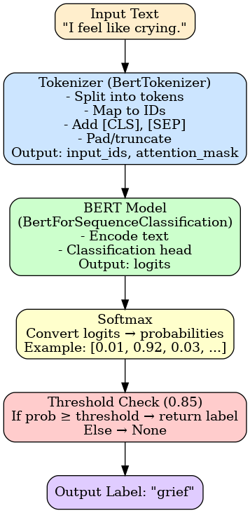

Problem
- Student Success Advisors overwhelmed by repetitive low-complexity queries
- Reduced staffing increases workload pressure
- High volume increases the risk of missing students in distress
Our Solution
Instant FAQs
Answers common questions immediately to reduce friction and wait times.
Distress Detection
Emotion-aware routing flags and escalates students who need human support.
24/7 Availability
Always on — covers nights, weekends, and different time zones.
How it works — Non-Technical
1) Student types a question → 2) Chatbot searches the knowledge base → 3) It replies in friendly language → 4) Flags distress/complex cases for human follow-up.
Example dialogue
Student: "I'm feeling overwhelmed and not sure I can keep up this term." Chatbot: "I'm really sorry you're feeling this way. You don’t have to go through it alone. Please speak with a Student Success Advisor
who can support you. You can book an appointment at https://collegeportal.edu/ssa-booking or call us directly at 555-123-4567."
How it works — Technical
Core components:
- Intent Classifier (BERT) — identifies the topic of the question.
- Emotion Classifier (BERT) — determines emotional tone (distress detection).
- FAISS Semantic Search — retrieves the most relevant content chunks from the knowledge base.
- LLM (GPT / local) — generates fluent, context-aware responses.
- Logger — stores anonymized data for analytics and continuous improvement.
Architecture Diagram

Emotion prediction
A fine-tuned BERT + tokenizer reads the input, tokenizes it into tensors, passes through BERT to get logits → softmax converts logits to probabilities → apply a confidence threshold to return a label or None.
NLP Pipeline
- Text acquisition — load chunks from CSVs
- Text encoding — SentenceTransformer (all-MiniLM-L6-v2) → embeddings
- Vector storage — FAISS index for fast similarity search
- Semantic retrieval — return semantically closest chunks for the query
Challenges & Lessons
- Model loading and filesystem/path issues
- Cleaning mixed-format data sources
- Balancing cost vs accuracy (cloud LLMs vs local models)
- Designing modular and explainable components
Impact — Why it matters
💬 24/7 Social Impact
Always-on support that detects intent & emotions so students are
never left unheard.
💡 Economic Advantage
Reduces advisor workload and shortens response times.
🚀 Industrial Adaptability
Apply to tutoring, mental health platforms, and customer service.
Next Steps
- Integrate with student portal and SSO
- Expand knowledge base content coverage
- Add an analytics dashboard for advisors
- Support multiple languages